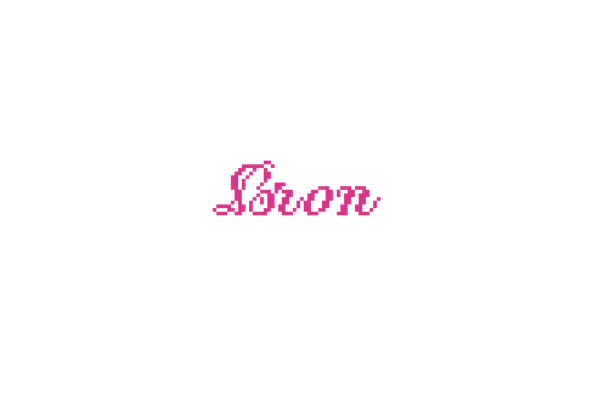

Open Source Fashion

Bekijk hier de documentaires, podcasts en artikelen die zijn gebruikt als inspiratie en onderbouwing voor dit platform, inclusief de verantwoording van het onderzoek.
Aanbevolen Media voor Verder Onderzoek
- Thomas, D. (2019). Fashionopolis: The price of fast fashion and the future of clothes [Boek]. Penguin Press.
- The Business of Fashion. (n.d.). The Business of Fashion podcast [Audio-podcast]. The Business of Fashion.
- Pegg, A. (Regisseur). (2016). The first Monday in May [Film]. Magnolia Pictures.
- Adobe. (n.d.). Adobe Illustrator prijzen en plannen. Geraadpleegd op 21 oktober 2026, van https://www.adobe.com/nl/products/illustrator/campaign/pricing.html
- Adobe. (n.d.). Adobe Fresco: Tekenen en schilderen app. Geraadpleegd op 21 oktober 2026, van https://www.adobe.com/nl/products/fresco.html
- Adobe Fonts. (n.d.). PF Pixelscript. Geraadpleegd op 21 oktober 2026, van https://fonts.adobe.com/fonts/pf-pixelscript
- Canva. (n.d.). Canva: Visual suite for everyone. Geraadpleegd op 21 oktober 2026, van https://www.canva.com/
- Dollcrds. (2025, 14 mei). How to make this neocities layout - html & css tutorial [Video]. YouTube.
- Flickarity. (2025, 8 mei). Simple website layout from scratch using HTML/CSS :D [Video]. YouTube.
- GreatStack. (2020, 9 augustus). How to make a website header using HTML and CSS step by step | Web design in HTML & CSS [Video]. YouTube.
- Mozilla Developer Network. (n.d.). MDN Web Docs. Geraadpleegd op 21 oktober 2026, van https://developer.mozilla.org/en-US/
- Veen, R. (2026). Persoonlijke communicatie en technische ondersteuning bij webontwikkeling [Persoonlijke mededeling].
- W3Schools. (n.d.). W3Schools online web tutorials. Geraadpleegd op 21 oktober 2026, van https://www.w3schools.com/
- WebTech Gyan. (2022, 30 september). How to make a header and footer using HTML & CSS | Header & footer for website design [Video]. YouTube.